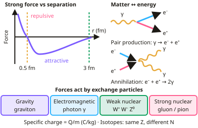

A-level Physics Year 12 · Topic 2
Particles and radiation
Particles and radiation takes us inside the atom and the nucleus, down to the quarks and leptons that make up all matter.
We will look at nuclear structure and specific charge, the strong nuclear force and radioactive decay, and the families of particles and antiparticles.
Then we explore photons, the photoelectric effect, energy levels and line spectra, and the wave–particle duality of electrons.
- 8 subtopics
- 429 questions
- Free: 2.1 notes and 10 questions
In this topic
- 2.1Particles, antiparticles and forcesFree below · 66 questions
- 2.2Quarks, hadrons and leptonsOpen in Full Marks · 21 questions
- 2.3Photons, photoelectric effect and energy levelsOpen in Full Marks · 54 questions
- 2.4Constituents of the atom, isotopes, nuclide notation and specific chargeOpen in Full Marks · 66 questions
- 2.5Stable and unstable nuclei: strong nuclear force, alpha and beta decay and the neutrinoOpen in Full Marks · 70 questions
- 2.6Electron collisions with atoms: excitation, ionisation and fluorescent tubesOpen in Full Marks · 67 questions
- 2.7Wave–particle duality: de Broglie wavelength and electron diffractionOpen in Full Marks · 53 questions
- 2.8Practical: estimating the Planck constant using LEDsOpen in Full Marks · 32 questions
2.1 · Free notes
Particles, antiparticles and forces

Key points
- The nucleus contains protons and neutrons; specific charge = charge ÷ mass (C/kg). Isotopes have the same proton number but different neutron numbers.
- The strong nuclear force is attractive up to about 3 fm and repulsive below about 0.5 fm, holding nucleons together against electrostatic repulsion.
- Every particle has a corresponding antiparticle with the same mass but opposite charge, e.g. positron for the electron. Annihilation produces two photons; pair production creates a particle-antiparticle pair from a photon.
- The four fundamental interactions are gravity, electromagnetic, weak nuclear and strong nuclear; they act via exchange particles (e.g. photon for electromagnetic, W bosons for the weak interaction).
In more detail
- Pair production and annihilation: a photon with energy ≥ 2 × rest energy can create a particle–antiparticle pair; when they meet, they annihilate into two photons.
- Worked minimum photon energy: creating an electron–positron pair needs at least 2 × 0.511 MeV = 1.022 MeV.
- Exchange particles: electromagnetic → virtual photon; weak → W⁺, W⁻ (and Z⁰); strong → gluons (pions between nucleons); gravity → graviton (hypothetical).
- Electron capture: p + e⁻ → n + νₑ, mediated by a W⁺ boson; a proton-rich nucleus captures an inner electron.
Practice
Particles, antiparticles and forces: 10 questions
Pick an answer to check it, or open the answer for the explanation.
1. What happens in annihilation?
- A photon creates a particle pair
- A particle and antiparticle meet and produce two photons
- A nucleus splits
- A neutron becomes a proton
Show answer
B: A particle and antiparticle meet and produce two photons. Mass is converted into energy as photons.
2. Which exchange particle mediates the electromagnetic force?
- Gluon
- Photon
- W boson
- Graviton
Show answer
B: Photon. Virtual photons are exchanged between charged particles.
3. Why is the strong nuclear force repulsive at very short ranges?
- To prevent nucleons collapsing into each other
- Because it becomes gravitational
- Because charge changes sign
- It is never repulsive
Show answer
A: To prevent nucleons collapsing into each other. This keeps the nucleons at a stable separation.
4. What is the antiparticle of the electron?
- Proton
- Neutron
- Positron
- Neutrino
Show answer
C: Positron. It has the same mass but a positive charge.
5. Which interaction is responsible for beta decay?
- Strong nuclear
- Weak nuclear
- Electromagnetic
- Gravitational
Show answer
B: Weak nuclear. W bosons mediate the weak interaction in beta decay.
6. Which particle is not affected by the strong nuclear force?
- Proton
- Neutron
- Electron
- Quark
Show answer
C: Electron. Electrons are leptons and do not feel the strong force.
7. What is conserved in every particle interaction, without exception?
- Strangeness
- Charge
- Only mass
- Colour
Show answer
B: Charge. Charge conservation holds in all known interactions.
8. What is the minimum photon energy needed for electron–positron pair production? (Rest energy of an electron = 0.51 MeV)
- 0.26 MeV
- 0.51 MeV
- 1.02 MeV
- 2.04 MeV
Show answer
C: 1.02 MeV. The photon must supply the rest energy of both the electron and the positron: 2 × 0.51 = 1.02 MeV. Any extra energy becomes kinetic energy of the pair.
9. A stationary electron and positron annihilate. Why are two photons produced rather than one?
- Because the strong force always emits photons in pairs
- To conserve momentum, as the initial total momentum is zero
- To conserve charge, as the pair has charge ±e
- To conserve baryon number
Show answer
B: To conserve momentum, as the initial total momentum is zero. The initial momentum is zero. One photon would carry momentum away, so two photons travel in opposite directions with equal and opposite momenta, keeping the total at zero.
10. At which separation between two nucleons is the strong nuclear force attractive?
- 6 fm
- 1.5 fm
- 0.4 fm
- 0.2 fm
Show answer
B: 1.5 fm. The strong force is repulsive below about 0.5 fm and attractive from about 0.5 fm up to about 3 fm. It is negligible beyond that, so 1.5 fm is the only attractive separation.
Keep going in Full Marks
Full Marks has 66 questions on Particles, antiparticles and forces (56 more than here), set out in practice levels. You also get notes and 3D models for all 8 subtopics of Particles and radiation, plus games, timed exams and past papers.